Discover Devbhoomi
Analytics & Heritage
A fusion of breathtaking nature and raw data. Uncovering the historical evolution, local economy, and hidden potentials of Uttarakhand.
₹500Cr+
Tourism Economy
1.5Lakh+
Local Businesses
22 Major
Monitored Hubs
Visual Assets
1. नैनीताल
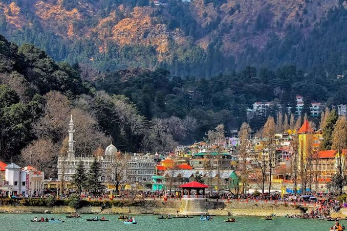
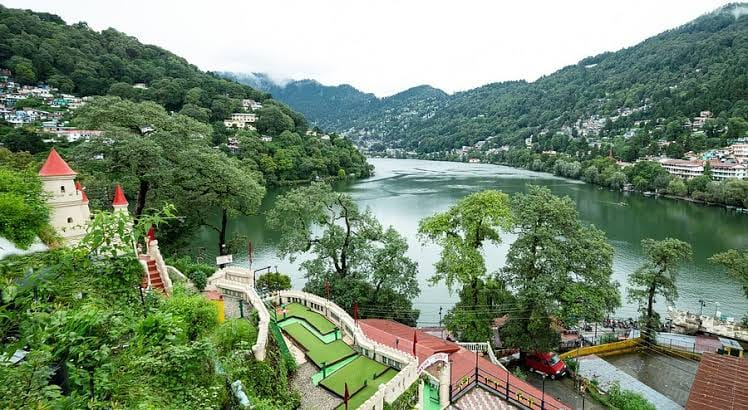
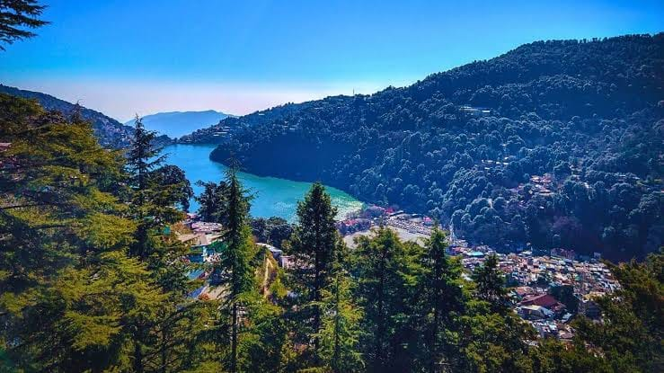
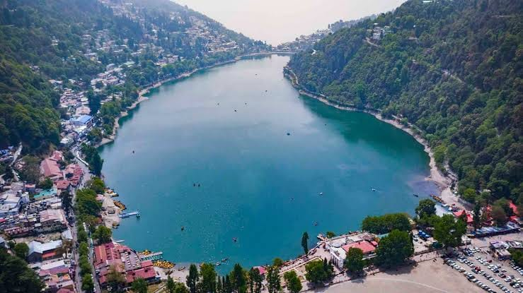
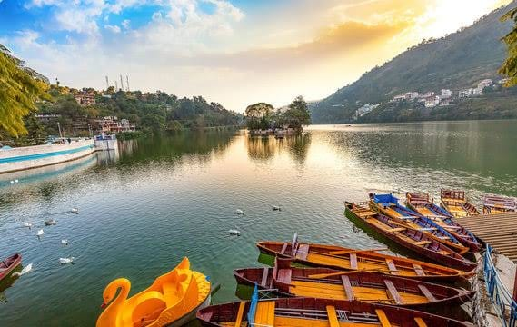
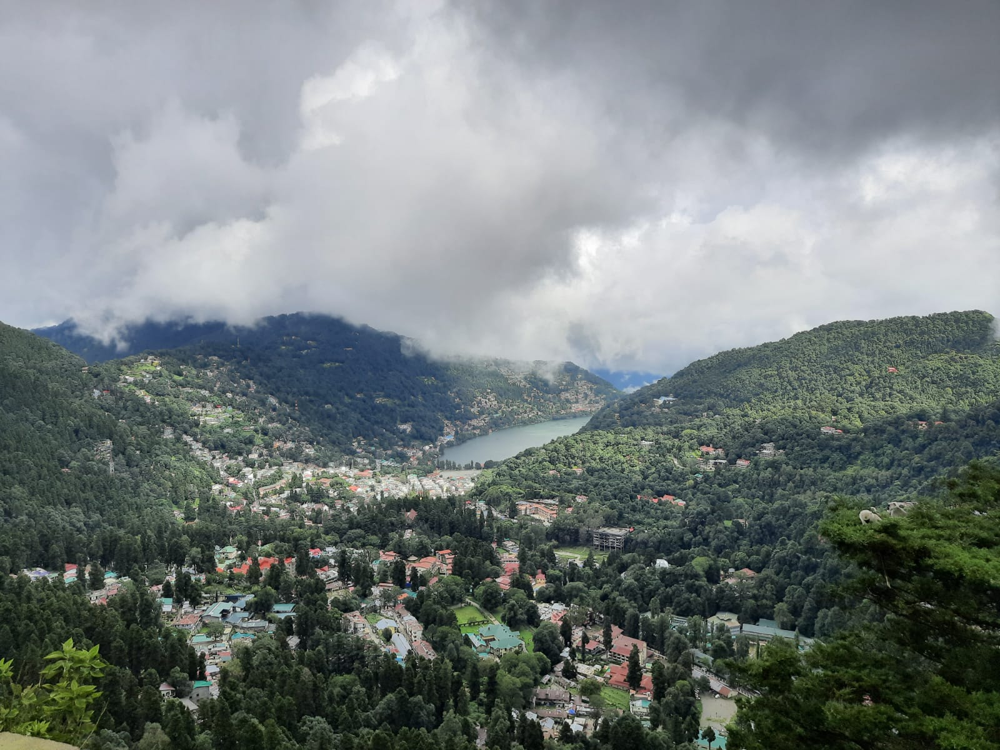
2. मसूरी
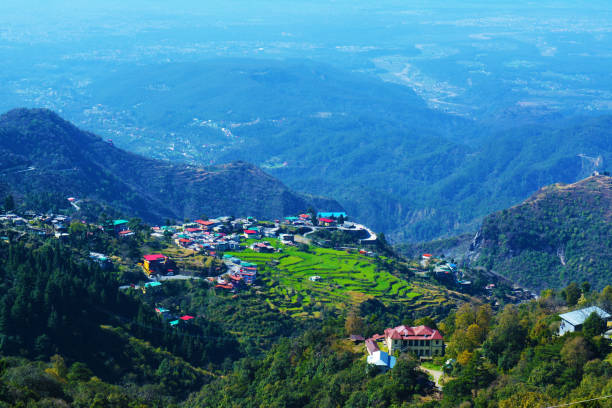
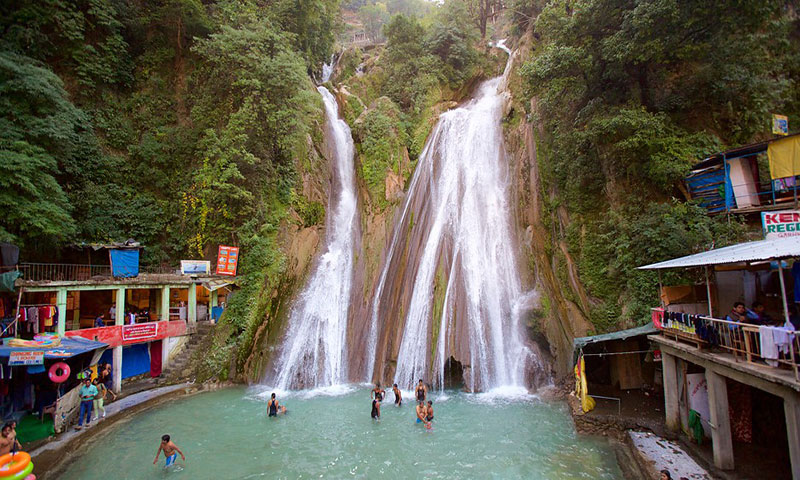
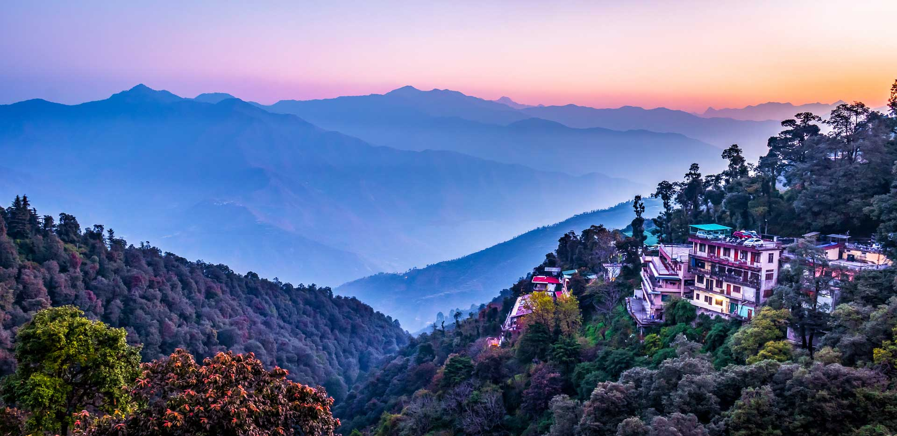
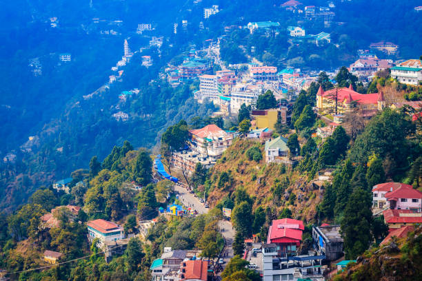
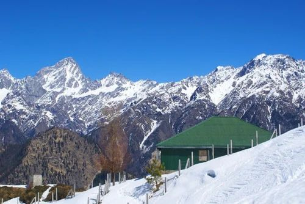
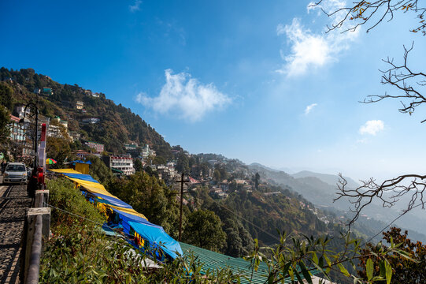
3. नेलांग वैली


4. मुनस्यारी


5. चोपता


6. खिरसू
7. कनाताल


8. मुक्तेश्वर


9. पांगोट


10. मिलम ग्लेशियर


11. पिंडारी ग्लेशियर


.webp)
12. केदारकांठा


%20(1).webp)

13. कल्पेश्वर


14. बेदिनी बुग्याल


15. घोड़ाखाल

16. कैंची धाम


17. कनासार


18. हनोल


19. डोडीताल


20. हर्षिल


21. ओसला / औली


22. कुंती वैली


Data Matrix
| Location Name | District | Core Significance | Monthly Visitors | Economic Source |
|---|---|---|---|---|
| 1. नैनीताल | नैनीताल | झील का शहर | 50,000+ | होटल इंडस्ट्री, बोटिंग |
| 2. मसूरी | देहरादून | पहाड़ों की रानी | 45,000+ | रिसॉर्ट्स, टैक्सी सिंडिकेट |
| 3. नेलांग वैली | उत्तरकाशी | इंडो-चाइना बॉर्डर | 500 - 1000 | परमिट फीस, 4x4 वाहन |
| 4. मुनस्यारी | पिथौरागढ़ | पंचाचूली दर्शन | 3000 - 5000 | होमस्टे, पश्मीना व्यापार |
| 5. चोपता | रुद्रप्रयाग | मिनी स्विट्जरलैंड | 10,000+ | टेंट कैम्पिंग, ढाबे |
| 6. खिरसू | पौड़ी | शांत एकांत, ओक जंगल | 500 - 1000 | एग्री-टूरिज़्म, होमस्टे |
| 7. कनाताल | टिहरी | लक्ज़री इको-टूरिज़्म | 4000 - 6000 | जंगल कैम्प, एडवेंचर |
| 8. मुक्तेश्वर | नैनीताल | शिव मंदिर, बागान | 5000 - 7000 | बुटीक कॉटेज, फार्मिंग |
| 9. पांगोट | नैनीताल | पक्षी प्रेमियों का स्वर्ग | 2000 - 3000 | नेचर रिसॉर्ट्स, बर्डिंग |
| 10. मिलम | पिथौरागढ़ | ऐतिहासिक व्यापार मार्ग | 300 - 500 | ट्रेकिंग परमिट, कुली |
| 11. पिंडारी | बागेश्वर | नंदा देवी बेस | 400 - 600 | ट्रेक ऑपरेटर, गाइड |
| 12. केदारकांठा | उत्तरकाशी | विंटर स्नो ट्रेक | 8000 - 10000 | ट्रेकिंग एजेंसियां, रेंटल |
| 13. कल्पेश्वर | चमोली | पंच केदार का हिस्सा | 1500 - 2500 | प्रसाद, धर्मशालाएं |
| 14. बेदिनी | चमोली | अल्पाइन मैदान | 1000 - 2000 | ट्रेकिंग परमिट |
| 15. घोड़ाखाल | नैनीताल | गोलू देवता मंदिर | 8000 - 10000 | धार्मिक पर्यटन |
| 16. कैंची धाम | नैनीताल | नीम करोली बाबा आश्रम | 30,000+ | धर्मशालाएं, होटल |
| 17. कनासार | देहरादून | सबसे पुराने देवदार | 500 - 800 | इको-टूरिज़्म, कैम्पिंग |
| 18. हनोल | देहरादून | महासू देवता मंदिर | 1500 - 2000 | धार्मिक पर्यटन, हस्तशिल्प |
| 19. डोडीताल | उत्तरकाशी | गणेश जन्मस्थान | 800 - 1200 | फिशिंग परमिट, पोर्टर |
| 20. हर्षिल | उत्तरकाशी | सेब के बागान | 2000 - 3000 | प्रीमियम कॉटेज, व्यापार |
| 21. औली | चमोली | विंटर स्कीइंग | 2000 - 15000 | रोपवे, इंस्ट्रक्टर फीस |
| 22. कुंती वैली | पिथौरागढ़ | पूरी तरह अनछुआ कोना | 100 - 300 | ग्रामीण अर्थव्यवस्था |
Visual Analytics
Footfall Analysis
Economy Distribution
About Us
Vinay Singh Rawat
I am a technology student with a continuous drive to understand the intersection of Technology and Management. Having stepped into the professional world at the age of 17 with a keen interest in management, I constantly strive for self-improvement.
My lifelong goal has been to leverage web development, app development, tech-friendly conversations, and a technological mindset to elevate small businesses in Uttarakhand and beyond, giving them a strong internet presence.
I deeply enjoy meeting new people, communicating my ideas, and understanding their perspectives. My core career interests lie in roles such as Product Manager, Data Science & Analytics Engineer, Business Analyst, and other technical and management-oriented positions.
Vision & Mission
Mission: To connect with brilliant and renowned technology and management professionals over the next 5+ years, establishing a new and impactful identity in the industry.
Vision: To empower small-scale products and businesses in Uttarakhand and other regions with essential internet knowledge, visionary guidance, and collaborative growth, advancing together in the dynamic world of internet and management.